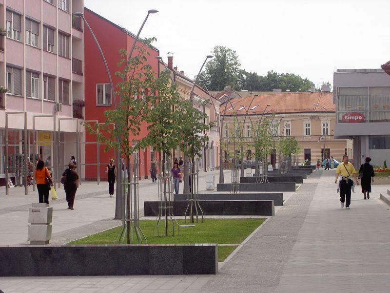
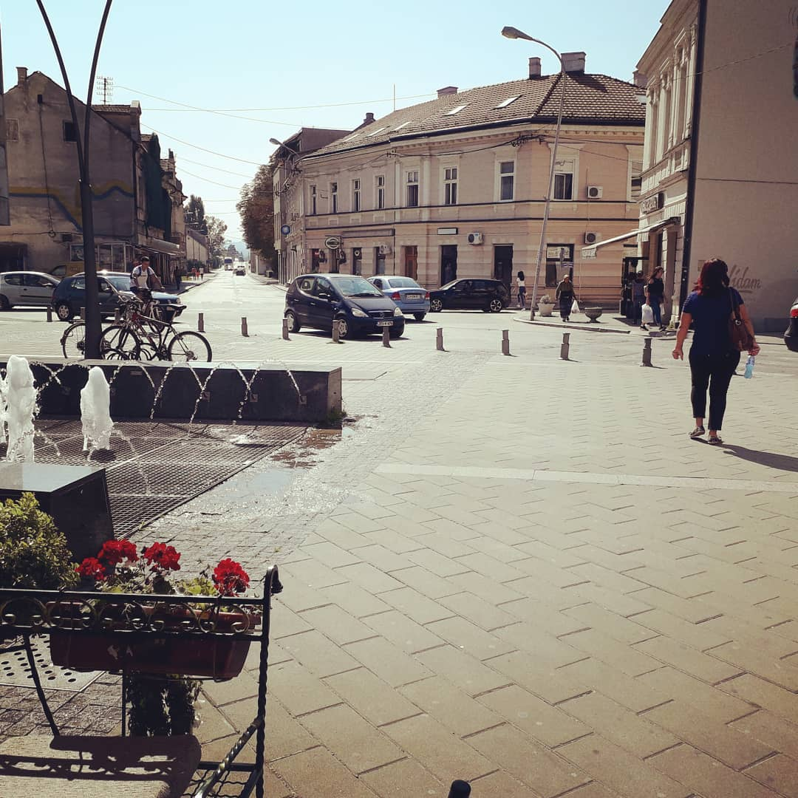
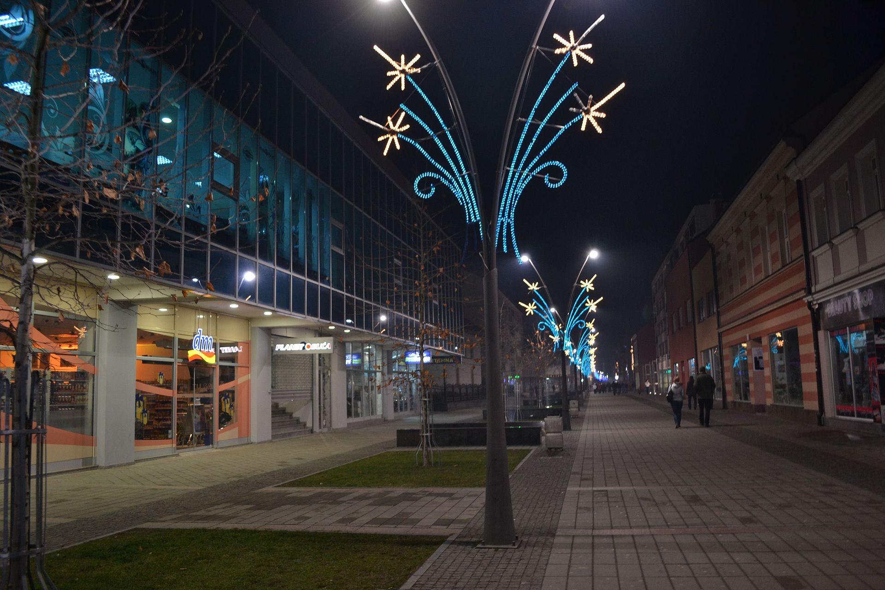
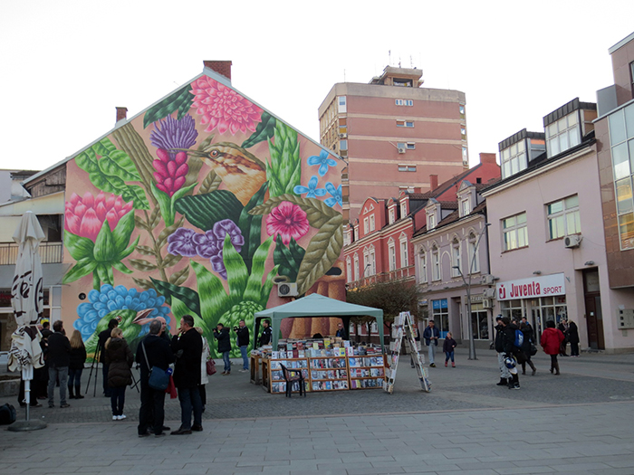
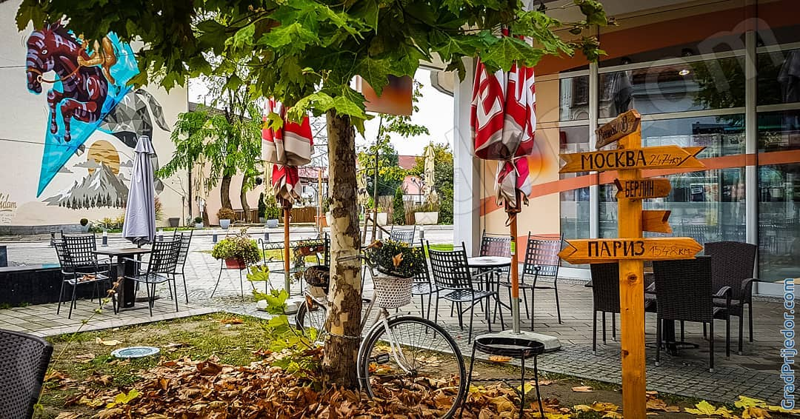
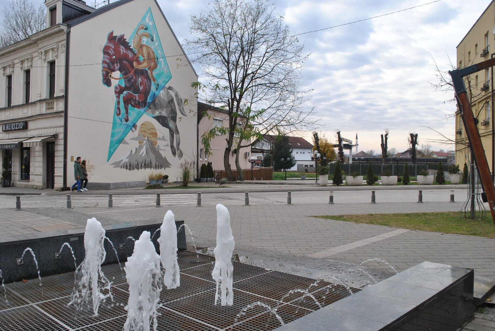

OMILJENI GRAD
PRIJEDOR
Prijedor je gradsko naselje, odnosno naseljeno mesto u severozapadnom delu Republike Srpske, BiH. Smešten je u Potkozarju. Prijedor je treće naseljeno mesto po broju stanovnika u Republici Srpskoj sa 27.970 stanovnika.
Klima:
Klima Prijedora je umjereno kontinentalna. Srednja godišnja temperatura je 11,7 °C, srednja zimska 1,6 °C, dok je srednja ljetna 21,6 °C. Srednja godišnja količina padavina iznosi 942 mm.
Pročitajte više na: WIKI|
 Trg Zorana Karlice |
 Šetalište |
 Novogodišnja svjetla |
|  Treći mural: Rađen u okviru projekta “Prijedor – grad murala” |
 Jesen |
 Još jedan mural... |